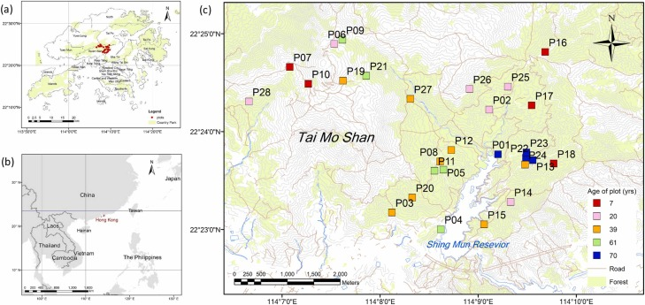
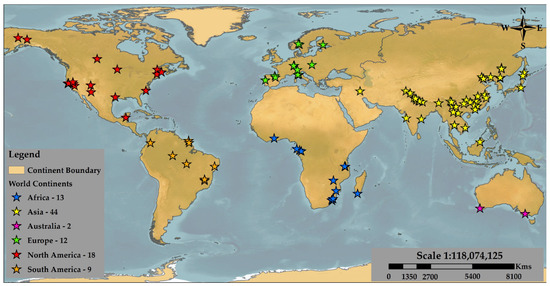

Smart Sensing for Climate & Development
Home
About
Work
Projects
Research
People
Explore
Home
About
Work
Projects
Research
People
Explore
All Researches
Monitoring of large-scale forest restoration: Evidence of vegetation recovery and reversing chronic ecosystem degradation in the mountain region of Pakistan.
Published
Enhancing Vegetation Cover Growth Through Water Spreading Bunds and Dry Afforestation in Arid Rangelands.
Under Revision
Impact of Fire on Secondary Forest Succession in a Sub-Tropical Landscape.
Published
Advancing Mangrove Mapping with the Integrated Mangrove Index (IMI) and the Role of Tidal Dynamics.
Under Revision
Tree Species Identification by Integrated Assessment of Multi-Temporal UAV Imagery.
Under Revision

Phylogenetic structure and turnover between lowland and montane subtropical forests indicate differential community assembly processes.
Published

Forest Aboveground Biomass Estimation and Inventory: Evaluating Remote Sensing-Based Approaches.
Published
Beta diversity subcomponents of plant species turnover and nestedness reveal drivers of community assembly in a regenerating subtropical forest.
Published